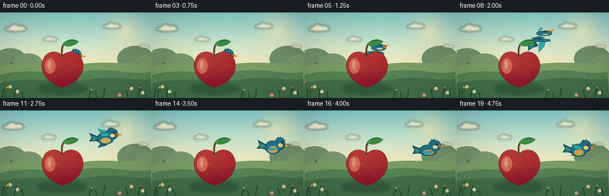
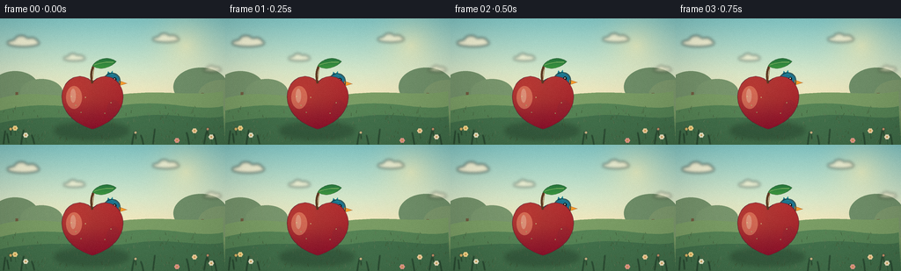
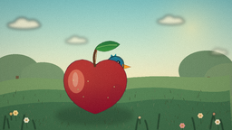
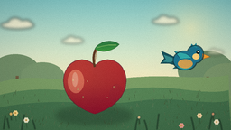
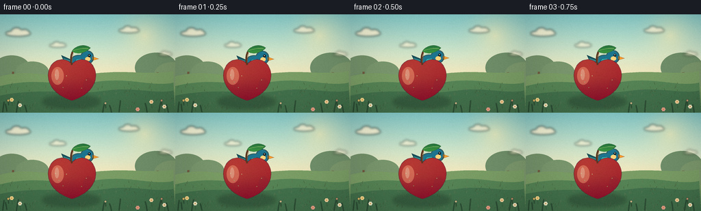
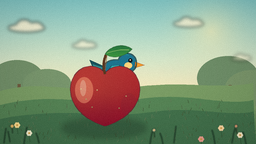
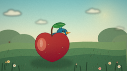
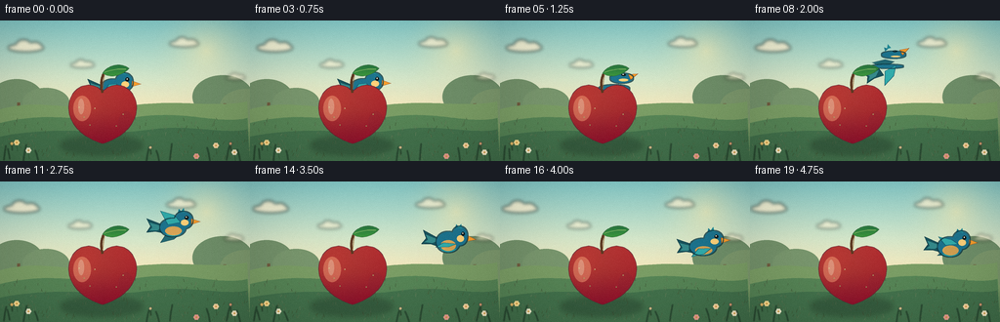

CODING AGENTS AS PIXEL WORLD MODELS
traex/DeepSeek-V4.1-Flash · dynamic_spatial_relationship_0036
点击播放 · 原生 RGB 像素
逐轮保存的候选
回放视频、检查图与代码变化。
每份候选均可单独播放。实际图片检查记录在下方工具轨迹中。
候选 01播放与检查图
点击播放 · 原生 RGB 像素

展开代码变化
--- 上一保存版本
+++ 本次保存版本
@@ -0,0 +1,481 @@
+from __future__ import annotations
+
+import math
+import subprocess
+from pathlib import Path
+
+import numpy as np
+from PIL import Image, ImageChops, ImageDraw, ImageFilter
+
+import artifact_io
+
+
+W, H = 256, 144
+FRAMES = 20
+FPS = 4.0
+SS = 4
+CASE_DIR = Path(__file__).resolve().parent
+
+
+def sc(value: float) -> int:
+ return int(round(value * SS))
+
+
+def point(x: float, y: float) -> tuple[int, int]:
+ return sc(x), sc(y)
+
+
+def ellipse(draw: ImageDraw.ImageDraw, box, fill, outline=None, width=0):
+ draw.ellipse(tuple(sc(v) for v in box), fill=fill, outline=outline, width=sc(width))
+
+
+def polygon(draw: ImageDraw.ImageDraw, pts, fill, outline=None, width=0):
+ draw.polygon([point(x, y) for x, y in pts], fill=fill)
+ if outline is not None:
+ draw.line(
+ [point(x, y) for x, y in pts] + [point(*pts[0])],
+ fill=outline,
+ width=max(1, sc(width)),
+ joint="curve",
+ )
+
+
+def line(draw: ImageDraw.ImageDraw, pts, fill, width):
+ draw.line([point(x, y) for x, y in pts], fill=fill, width=max(1, sc(width)), joint="curve")
+
+
+def bezier(p0, p1, p2, p3, steps=32):
+ result = []
+ for i in range(steps):
+ t = i / steps
+ u = 1.0 - t
+ result.append(
+ (
+ u**3 * p0[0] + 3 * u * u * t * p1[0] + 3 * u * t * t * p2[0] + t**3 * p3[0],
+ u**3 * p0[1] + 3 * u * u * t * p1[1] + 3 * u * t * t * p2[1] + t**3 * p3[1],
+ )
+ )
+ return result
+
+
+def gradient_array(top, bottom, height=H * SS):
+ t = np.linspace(0.0, 1.0, height, dtype=np.float32)[:, None]
+ top = np.asarray(top, dtype=np.float32)
+ bottom = np.asarray(bottom, dtype=np.float32)
+ return np.broadcast_to(top + (bottom - top) * t[:, :, None], (height, W * SS, 3))
+
+
+def add_radial_glow(array: np.ndarray, cx: float, cy: float, radius: float, color, strength: float):
+ h, w = array.shape[:2]
+ yy, xx = np.mgrid[:h, :w]
+ dist = np.sqrt((xx - cx * SS) ** 2 + (yy - cy * SS) ** 2) / (radius * SS)
+ glow = np.clip(1.0 - dist, 0.0, 1.0) ** 2 * strength
+ color = np.asarray(color, dtype=np.float32)
+ array[:] = array * (1.0 - glow[:, :, None]) + color * glow[:, :, None]
+
+
+def add_noise(image: Image.Image, amount: float = 2.1, seed: int = 7) -> Image.Image:
+ rng = np.random.default_rng(seed)
+ arr = np.asarray(image).astype(np.float32)
+ noise = rng.normal(0.0, amount, arr.shape[:2])[:, :, None]
+ arr = np.clip(arr + noise, 0, 255).astype(np.uint8)
+ return Image.fromarray(arr, "RGB")
+
+
+def make_background() -> Image.Image:
+ top = np.array([132, 207, 211], dtype=np.float32)
+ middle = np.array([207, 229, 205], dtype=np.float32)
+ horizon = np.array([251, 232, 187], dtype=np.float32)
+ sky_h = sc(103)
+ t = np.linspace(0.0, 1.0, sky_h, dtype=np.float32)[:, None, None]
+ split = 0.58
+ lower_t = np.clip((t - split) / (1.0 - split), 0.0, 1.0)
+ upper_t = np.clip(t / split, 0.0, 1.0)
+ sky = np.where(t < split, top + (middle - top) * upper_t, middle + (horizon - middle) * lower_t)
+ sky = np.broadcast_to(sky, (sky_h, W * SS, 3)).copy()
+ add_radial_glow(sky, 211, 31, 61, (255, 245, 190), 0.58)
+ add_radial_glow(sky, 42, 72, 70, (246, 247, 207), 0.15)
+
+ ground = np.empty((H * SS - sky_h, W * SS, 3), dtype=np.float32)
+ for row in range(ground.shape[0]):
+ f = row / max(1, ground.shape[0] - 1)
+ ground[row] = np.array([131, 164, 111]) * (1 - f) + np.array([53, 103, 74]) * f
+ canvas = np.concatenate([sky, ground], axis=0)
+ image = Image.fromarray(np.clip(canvas, 0, 255).astype(np.uint8), "RGB")
+ draw = ImageDraw.Draw(image)
+
+ # Distant orchard: low-contrast canopies create depth without competing with the subjects.
+ for cx, cy, rx, ry, color in [
+ (17, 79, 27, 19, (112, 145, 109)),
+ (47, 84, 24, 15, (118, 151, 113)),
+ (228, 78, 31, 22, (108, 143, 108)),
+ (252, 88, 27, 18, (120, 151, 111)),
+ ]:
+ ellipse(draw, (cx - rx, cy - ry, cx + rx, cy + ry), color)
+ for x, y in [(19, 84), (230, 85)]:
+ line(draw, [(x, y), (x - 1, 117)], (109, 92, 67), 3.2)
+
+ # Layered hills and a sunlit meadow.
+ back_hill = bezier((0, 91), (44, 78), (82, 96), (129, 88))
+ back_hill += bezier((129, 88), (177, 79), (225, 91), (256, 82))
+ back_hill += [(256, 144), (0, 144)]
+ polygon(draw, back_hill, (119, 157, 104))
+ front_hill = bezier((0, 105), (55, 91), (89, 107), (139, 99))
+ front_hill += bezier((139, 99), (192, 91), (226, 108), (256, 99))
+ front_hill += [(256, 144), (0, 144)]
+ polygon(draw, front_hill, (83, 132, 88))
+
+ meadow = bezier((0, 119), (62, 106), (106, 119), (151, 112))
+ meadow += bezier((151, 112), (198, 105), (228, 118), (256, 111))
+ meadow += [(256, 144), (0, 144)]
+ polygon(draw, meadow, (64, 113, 78))
+
+ # Subtle grass texture.
+ rng = np.random.default_rng(19)
+ for _ in range(210):
+ x = float(rng.uniform(0, 256))
+ y = float(rng.uniform(101, 143))
+ length = float(rng.uniform(1.4, 4.0))
+ lean = float(rng.uniform(-1.5, 1.5))
+ shade = int(rng.integers(70, 111))
+ line(draw, [(x, y), (x + lean, y - length)], (shade - 14, shade + 15, shade - 18), 0.42)
+
+ # A few small flowers at the edges frame the scene.
+ for x, y, color in [
+ (17, 125, (244, 220, 148)),
+ (29, 133, (237, 238, 210)),
+ (221, 128, (242, 214, 167)),
+ (240, 135, (246, 235, 204)),
+ (201, 139, (230, 160, 148)),
+ ]:
+ line(draw, [(x, y + 3), (x + 1, y + 9)], (49, 92, 60), 0.65)
+ for angle in np.linspace(0, 2 * math.pi, 6, endpoint=False):
+ ellipse(
+ draw,
+ (x + math.cos(angle) * 1.7 - 1.2, y + math.sin(angle) * 1.7 - 1.2,
+ x + math.cos(angle) * 1.7 + 1.2, y + math.sin(angle) * 1.7 + 1.2),
+ color,
+ )
+ ellipse(draw, (x - 0.8, y - 0.8, x + 0.8, y + 0.8), (209, 151, 58))
+
+ return image
+
+
+def cloud_layer(frame: int) -> Image.Image:
+ layer = Image.new("RGBA", (W * SS, H * SS), (0, 0, 0, 0))
+ draw = ImageDraw.Draw(layer)
+ drift = frame * 0.38
+ clouds = [
+ (26 - drift, 27, 0.82, 205),
+ (84 - drift * 0.55, 45, 0.55, 155),
+ (188 - drift * 0.7, 23, 0.67, 176),
+ (241 - drift * 0.45, 58, 0.46, 130),
+ ]
+ for cx, cy, size, alpha in clouds:
+ color = (255, 249, 222, int(alpha))
+ ellipse(draw, (cx - 22 * size, cy - 4 * size, cx + 23 * size, cy + 6 * size), color)
+ ellipse(draw, (cx - 12 * size, cy - 9 * size, cx + 7 * size, cy + 5 * size), color)
+ ellipse(draw, (cx + 3 * size, cy - 6 * size, cx + 20 * size, cy + 5 * size), color)
+ return layer.filter(ImageFilter.GaussianBlur(sc(1.7)))
+
+
+def make_apple_shadow() -> Image.Image:
+ layer = Image.new("RGBA", (W * SS, H * SS), (0, 0, 0, 0))
+ draw = ImageDraw.Draw(layer)
+ draw.ellipse(
+ (sc(62), sc(119), sc(146), sc(137)),
+ fill=(31, 57, 43, 100),
+ )
+ return layer.filter(ImageFilter.GaussianBlur(sc(3.0)))
+
+
+def apple_outline() -> list[tuple[float, float]]:
+ pts = []
+ pts += bezier((105, 73), (96, 62), (78, 64), (72, 80), 28)
+ pts += bezier((72, 80), (65, 99), (80, 119), (105, 126), 28)
+ pts += bezier((105, 126), (130, 119), (145, 99), (138, 80), 28)
+ pts += bezier((138, 80), (132, 64), (114, 62), (105, 73), 28)
+ return pts
+
+
+def make_apple() -> Image.Image:
+ layer = Image.new("RGBA", (W * SS, H * SS), (0, 0, 0, 0))
+ mask = Image.new("L", layer.size, 0)
+ mask_draw = ImageDraw.Draw(mask)
+ outline = apple_outline()
+ mask_draw.polygon([point(x, y) for x, y in outline], fill=255)
+
+ yy, xx = np.mgrid[: H * SS, : W * SS]
+ xb = xx / SS
+ yb = yy / SS
+ light = np.clip(1.18 - np.sqrt(((xb - 86) / 53) ** 2 + ((yb - 86) / 48) ** 2), 0, 1)
+ vertical = np.clip((111 - yb) / 44, 0, 1)
+ shade = 0.30 * light + 0.20 * vertical
+ dark = np.array([126, 30, 43], dtype=np.float32)
+ bright = np.array([240, 89, 67], dtype=np.float32)
+ rgb = dark + (bright - dark) * shade[:, :, None]
+ rgb[:, :, 0] += np.clip((xb - 105) / 34, 0, 1) * 18
+ rgb[:, :, 1] -= np.clip((yb - 93) / 31, 0, 1) * 17
+ apple_fill = Image.fromarray(np.clip(rgb, 0, 255).astype(np.uint8), "RGB").convert("RGBA")
+ layer.paste(apple_fill, (0, 0), mask)
+
+ draw = ImageDraw.Draw(layer)
+ # Gloss and warm reflected light, clipped by the apple silhouette.
+ gloss = Image.new("RGBA", layer.size, (0, 0, 0, 0))
+ gloss_draw = ImageDraw.Draw(gloss)
+ ellipse(gloss_draw, (75, 77, 93, 103), (255, 184, 138, 100))
+ ellipse(gloss_draw, (80, 80, 86, 96), (255, 231, 192, 130))
+ ellipse(gloss_draw, (121, 93, 137, 117), (126, 37, 55, 58))
+ gloss.putalpha(ImageChops.multiply(gloss.getchannel("A"), mask))
+ layer = Image.alpha_composite(layer, gloss)
+ draw = ImageDraw.Draw(layer)
+
+ line(draw, outline + [outline[0]], (105, 29, 45, 220), 0.8)
+ # Stem.
+ stem = bezier((105, 74), (103, 65), (103, 59), (108, 51), 20)
+ line(draw, stem, (89, 55, 34, 255), 2.5)
+ line(draw, [(107, 54), (105, 70)], (144, 91, 49, 210), 0.7)
+
+ # Leaf.
+ leaf_mask = Image.new("L", layer.size, 0)
+ leaf_draw = ImageDraw.Draw(leaf_mask)
+ leaf_pts = bezier((105, 54), (111, 44), (125, 43), (132, 49), 20)
+ leaf_pts += bezier((132, 49), (124, 58), (111, 59), (105, 54), 20)
+ leaf_draw.polygon([point(x, y) for x, y in leaf_pts], fill=255)
+ leaf_rgb = np.zeros((H * SS, W * SS, 3), dtype=np.uint8)
+ leaf_rgb[:, :] = (54, 122, 63)
+ leaf_rgb[:, :, 1] = np.clip(104 + (yy / SS - 42) * 3.1, 70, 164).astype(np.uint8)
+ leaf_rgb[:, :, 0] = np.clip(31 + (yy / SS - 42) * 1.8, 26, 80).astype(np.uint8)
+ leaf = Image.fromarray(leaf_rgb, "RGB").convert("RGBA")
+ layer.paste(leaf, (0, 0), leaf_mask)
+ draw = ImageDraw.Draw(layer)
+ line(draw, bezier((107, 53), (115, 50), (123, 49), (130, 50), 18), (120, 177, 83, 210), 0.65)
+ line(draw, [tuple(v) for v in leaf_pts + [leaf_pts[0]]], (37, 91, 49, 220), 0.55)
+
+ # Fine freckles catch the morning light.
+ for x, y in [(86, 99), (92, 107), (97, 90), (119, 108), (126, 96), (81, 89)]:
+ ellipse(draw, (x - 0.55, y - 0.55, x + 0.55, y + 0.55), (249, 180, 113, 92))
+
+ return layer
+
+
+def rotate_local(p, angle: float) -> tuple[float, float]:
+ x, y = p
+ c, s = math.cos(angle), math.sin(angle)
+ return x * c - y * s, x * s + y * c
+
+
+def bird_sprite(angle: float, wing: float | None) -> Image.Image:
+ pad = 60
+ sprite_w = sc(pad * 2)
+ sprite_h = sc(pad * 2)
+ layer = Image.new("RGBA", (sprite_w, sprite_h), (0, 0, 0, 0))
+ draw = ImageDraw.Draw(layer)
+ cx = cy = pad * SS
+
+ def tr(p):
+ x, y = rotate_local(p, angle)
+ return (cx + x * SS, cy + y * SS)
+
+ def trp(p):
+ x, y = tr(p)
+ return int(round(x)), int(round(y))
+
+ def poly(pts, fill, outline=None, width=0.0):
+ draw.polygon([trp(p) for p in pts], fill=fill)
+ if outline is not None:
+ draw.line([trp(p) for p in pts] + [trp(pts[0])], fill=outline,
+ width=max(1, sc(width)), joint="curve")
+
+ def ell(box, fill, outline=None, width=0.0):
+ x0, y0 = tr((box[0], box[1]))
+ x1, y1 = tr((box[2], box[3]))
+ bbox = (min(x0, x1), min(y0, y1), max(x0, x1), max(y0, y1))
+ draw.ellipse(bbox, fill=fill, outline=outline, width=max(0, sc(width)))
+
+ # Tail feathers sit behind the body.
+ poly([(-9, -2), (-27, -9), (-23, -1), (-27, 5), (-18, 4), (-8, 6)],
+ (22, 82, 94, 255), (12, 54, 68, 255), 0.55)
+ poly([(-10, -1), (-24, -5), (-21, 0), (-24, 3), (-16, 3)],
+ (50, 137, 142, 255))
+
+ if wing is None:
+ far_wing = [(-5, -3), (-10, 4), (-1, 8), (8, 2), (2, -4)]
+ near_wing = [(-5, -4), (-9, 2), (-2, 8), (9, 1), (3, -5)]
+ else:
+ up = [(-5, -4), (-13, -24), (1, -18), (8, -7)]
+ down = [(-5, 4), (-12, 22), (1, 16), (8, 5)]
+ t = (wing + 1.0) * 0.5
+ near_wing = [(a[0] * (1 - t) + b[0] * t, a[1] * (1 - t) + b[1] * t)
+ for a, b in zip(down, up)]
+ far_wing = [(x, -y * 0.82 + 1.5) for x, y in near_wing]
+
+ poly(far_wing, (20, 95, 111, 238), (12, 57, 72, 230), 0.55)
+
+ # Union of body and head, filled with a soft turquoise gradient.
+ body_mask = Image.new("L", layer.size, 0)
+ bm = ImageDraw.Draw(body_mask)
+ body_box = [tr((-13, -9)), tr((13, 9))]
+ bx0, by0 = body_box[0]
+ bx1, by1 = body_box[1]
+ bm.ellipse((min(bx0, bx1), min(by0, by1), max(bx0, bx1), max(by0, by1)), fill=255)
+ head_box = [tr((2, -16)), tr((20, 1))]
+ hx0, hy0 = head_box[0]
+ hx1, hy1 = head_box[1]
+ bm.ellipse((min(hx0, hx1), min(hy0, hy1), max(hx0, hx1), max(hy0, hy1)), fill=255)
+
+ body_fill = Image.new("RGBA", layer.size, (0, 0, 0, 0))
+ bf = ImageDraw.Draw(body_fill)
+ bf.rectangle((0, 0, sprite_w, sprite_h), fill=(34, 151, 164, 255))
+ bf.ellipse((0, 0, sprite_w, int(sprite_h * 0.56)), fill=(27, 115, 145, 255))
+ layer.paste(body_fill, (0, 0), body_mask)
+
+ # Warm belly and pale cheek.
+ belly_mask = Image.new("L", layer.size, 0)
+ belly_draw = ImageDraw.Draw(belly_mask)
+ bb = [tr((-8, -1)), tr((9, 8))]
+ belly_draw.ellipse(
+ (min(bb[0][0], bb[1][0]), min(bb[0][1], bb[1][1]),
+ max(bb[0][0], bb[1][0]), max(bb[0][1], bb[1][1])),
+ fill=220,
+ )
+ belly_mask = ImageChops.multiply(belly_mask, body_mask)
+ belly_fill = Image.new("RGBA", layer.size, (243, 168, 72, 235))
+ layer.paste(belly_fill, (0, 0), belly_mask)
+ ell((8, -8, 16, -2), (250, 209, 125, 255))
+
+ # Near wing with feather separations.
+ poly(near_wing, (47, 171, 175, 255), (15, 83, 105, 255), 0.6)
+ if wing is None:
+ line(draw, [tr((-5, -1)), tr((6, 2))], (139, 215, 189, 220), 0.55)
+ line(draw, [tr((-3, 3)), tr((6, 5))], (23, 106, 120, 210), 0.45)
+ else:
+ feather_mid = [(near_wing[0][0] * 0.42 + near_wing[3][0] * 0.58,
+ near_wing[0][1] * 0.42 + near_wing[3][1] * 0.58),
+ (near_wing[1][0] * 0.42 + near_wing[2][0] * 0.58,
+ near_wing[1][1] * 0.42 + near_wing[2][1] * 0.58)]
+ line(draw, [tr(near_wing[0]), tr(feather_mid[0])], (169, 226, 194, 220), 0.6)
+ line(draw, [tr(near_wing[0]), tr(feather_mid[1])], (20, 103, 120, 190), 0.45)
+
+ # Beak, eye, and tiny crown feathers.
+ poly([(19, -9), (28, -6), (19, -3)], (241, 157, 46, 255), (154, 80, 33, 255), 0.45)
+ line(draw, [tr((20, -6.4)), tr((25.5, -6.0))], (255, 198, 94, 220), 0.45)
+ ell((12, -12, 16, -8), (17, 27, 31, 255))
+ ell((13.2, -11.2, 14.4, -10.0), (244, 250, 230, 255))
+ poly([(5, -15), (6, -19), (9, -16)], (27, 124, 145, 255))
+ poly([(8, -16), (11, -20), (12, -15)], (31, 138, 154, 255))
+
+ # Crisp but soft outline around the combined body silhouette.
+ expanded = body_mask.filter(ImageFilter.MaxFilter(max(3, sc(1.05) * 2 + 1)))
+ edge = ImageChops.subtract(expanded, body_mask)
+ outline_layer = Image.new("RGBA", layer.size, (12, 57, 71, 205))
+ layer = Image.alpha_composite(layer, Image.composite(outline_layer, Image.new("RGBA", layer.size, (0, 0, 0, 0)), edge))
+ return layer
+
+
+def composite_bird(scene: Image.Image, frame: int):
+ path = [
+ (116, 79), (116, 79), (116, 78), (116, 79), (115, 81),
+ (117, 70), (122, 60), (130, 52), (141, 47), (153, 44),
+ (165, 44), (177, 47), (188, 51), (197, 57), (203, 62),
+ (207, 66), (208, 67), (207, 66), (206, 66), (205, 67),
+ ]
+ angles = [
+ 0.04, 0.04, 0.02, 0.03, -0.10, -0.36, -0.68, -0.66, -0.50, -0.30,
+ -0.12, 0.00, 0.10, 0.14, 0.12, 0.04, -0.04, 0.00, 0.04, 0.06,
+ ]
+ wings = [None, None, None, None, None, 0.05, -0.82, 0.88, -0.72, 0.82,
+ -0.58, 0.70, -0.46, 0.58, -0.34, 0.28, -0.46, 0.62, -0.25, 0.38]
+ bx, by = path[frame]
+ if frame <= 4:
+ by += 0.45 * math.sin(frame * 1.4)
+ sprite = bird_sprite(angles[frame], wings[frame])
+ left = sc(bx) - sprite.width // 2
+ top = sc(by) - sprite.height // 2
+ scene.alpha_composite(sprite, (left, top))
+
+
+def foreground_layer(frame: int) -> Image.Image:
+ layer = Image.new("RGBA", (W * SS, H * SS), (0, 0, 0, 0))
+ draw = ImageDraw.Draw(layer)
+ sway = math.sin(frame * 0.33)
+ # Foreground grass is slightly softer, giving the scene depth.
+ for i, (x, y, h, lean) in enumerate([
+ (4, 143, 15, 2), (10, 142, 11, -2), (24, 144, 17, 3), (39, 143, 10, -3),
+ (150, 144, 15, 3), (163, 144, 11, -3), (174, 143, 17, 2), (215, 144, 14, -3),
+ (232, 143, 18, 4), (246, 144, 12, -3),
+ ]):
+ bend = lean + sway * (1.3 if i % 2 else -0.8)
+ line(draw, [(x, y), (x + bend * 0.45, y - h * 0.55), (x + bend, y - h)],
+ (34, 77, 54, 235), 1.0)
+ for x, y, size, color in [
+ (12, 126, 1.8, (243, 214, 133)),
+ (154, 130, 1.4, (243, 234, 197)),
+ (236, 126, 1.6, (236, 177, 156)),
+ ]:
+ line(draw, [(x, y + 2), (x + 0.5, y + 7)], (37, 79, 50, 235), 0.7)
+ ellipse(draw, (x - size, y - size, x + size, y + size), color + (255,))
+ ellipse(draw, (x - 0.6, y - 0.6, x + 0.6, y + 0.6), (207, 139, 53, 255))
+ return layer.filter(ImageFilter.GaussianBlur(sc(0.45)))
+
+
+def render_frames():
+ background = make_background()
+ apple_shadow = make_apple_shadow()
+ apple = make_apple()
+ frames = []
+
+ for frame in range(FRAMES):
+ scene = Image.alpha_composite(background.convert("RGBA"), cloud_layer(frame))
+ scene = Image.alpha_composite(scene, apple_shadow)
+ composite_bird(scene, frame)
+ scene = Image.alpha_composite(scene, apple)
+ scene = Image.alpha_composite(scene, foreground_layer(frame))
+ rgb = scene.convert("RGB").resize((W, H), Image.Resampling.LANCZOS)
+
+ # Gentle warm grade and restrained texture keep the illustration cohesive.
+ arr = np.asarray(rgb).astype(np.float32)
+ arr[:, :, 0] = arr[:, :, 0] * 1.025 + 2.0
+ arr[:, :, 1] = arr[:, :, 1] * 1.005 + 1.0
+ arr[:, :, 2] = arr[:, :, 2] * 0.985
+ yy, xx = np.mgrid[:H, :W]
+ vignette = 1.0 - 0.085 * (((xx - 128) / 128) ** 2 + ((yy - 72) / 72) ** 2)
+ arr *= vignette[:, :, None]
+ rgb = Image.fromarray(np.clip(arr, 0, 255).astype(np.uint8), "RGB")
+ rgb = add_noise(rgb, 1.15, seed=31 + frame)
+ frames.append(np.asarray(rgb, dtype=np.uint8))
+
+ return np.stack(frames)
+
+
+def write_mp4(frames: np.ndarray):
+ try:
+ import shutil
+ if shutil.which("ffmpeg") is None:
+ return
+ temp_dir = CASE_DIR / ".tmp" / "video_frames"
+ temp_dir.mkdir(parents=True, exist_ok=True)
+ for i, frame in enumerate(frames):
+ Image.fromarray(frame).save(temp_dir / f"{i:02d}.png")
+ subprocess.run(
+ [
+ "ffmpeg", "-y", "-loglevel", "error", "-framerate", str(FPS),
+ "-i", str(temp_dir / "%02d.png"), "-c:v", "libx264",
+ "-pix_fmt", "yuv420p", "-crf", "14", "-movflags", "+faststart",
+ str(CASE_DIR / "video.mp4"),
+ ],
+ check=True,
+ )
+ except Exception as exc:
+ print(f"MP4 encode skipped: {exc}")
+
+
+def main():
+ frames = render_frames()
+ artifact_io.save(frames, CASE_DIR)
+ write_mp4(frames)
+ print(f"Saved {frames.shape[0]} RGB frames at {frames.shape[2]}x{frames.shape[1]} to {CASE_DIR}")
+
+
+if __name__ == "__main__":
+ main()
候选 02播放与检查图
点击播放 · 原生 RGB 像素

展开代码变化
--- 上一保存版本
+++ 本次保存版本
@@ -375,7 +375,7 @@
def composite_bird(scene: Image.Image, frame: int):
path = [
- (116, 79), (116, 79), (116, 78), (116, 79), (115, 81),
+ (116, 70), (116, 70), (116, 69), (116, 70), (115, 75),
(117, 70), (122, 60), (130, 52), (141, 47), (153, 44),
(165, 44), (177, 47), (188, 51), (197, 57), (203, 62),
(207, 66), (208, 67), (207, 66), (206, 66), (205, 67),
候选 03播放与检查图
点击播放 · 原生 RGB 像素

展开代码变化
代码未变化；重新保存了产物。
可观测工具轨迹
实际执行的命令与返回图片。
命令 1exit 0
/bin/bash -c 'ls -la'
命令 2exit 0
/bin/bash -c "pwd && rg --files -g 'prompt.txt' -g 'GENERATION_RULES.md' -g 'task_spec.json' -g '"'!node_modules'"'"
命令 3exit 0
/bin/bash -c 'cat prompt.txt'
命令 4exit 0
/bin/bash -c 'cat GENERATION_RULES.md'
命令 5exit 0
/bin/bash -c 'cat task_spec.json'
命令 6exit 0
/bin/bash -c "sed -n '1,260p' artifact_io.py"
命令 7exit 0
/bin/bash -c "sed -n '1,260p' player_template.html"
命令 8exit 1
/bin/bash -c 'python generate.py'
命令 9exit 0
/bin/bash -c 'python generate.py'
命令 10exit 0
/bin/bash -c 'python generate.py'
命令 11exit 127
/bin/bash -c 'ffprobe -v error -show_entries stream=codec_name,width,height,r_frame_rate,nb_frames -show_entries format=duration -of json video.mp4'
命令 12exit 0
/bin/bash -c "python - <<'PY'
from pathlib import Path
import json, numpy as np
from PIL import Image
p=Path('.')
frames=sorted((p/'frames').glob('*.png'))
print('frame_count', len(frames))
print('frame_sizes', sorted(set(Image.open(f).size for f in frames)))
print('frame_modes', sorted(set(Image.open(f).mode for f in frames)))
z=np.load(p/'pixels.npz')['pixels']
print('pixels_shape', z.shape, 'dtype', z.dtype)
print('index_exists', (p/'index.html').exists(), 'index_bytes', (p/'index.html').stat().st_size)
print('mp4_exists', (p/'video.mp4').exists(), 'mp4_bytes', (p/'video.mp4').stat().st_size if (p/'video.mp4').exists() else 0)
print('spec', json.loads((p/'task_spec.json').read_text()))
PY"命令 13exit 0
/bin/bash -c 'git status --short 2>/dev/null || true'
命令 14exit 0
/bin/bash -c 'which chromium chromium-browser google-chrome playwright node ffmpeg || true'
命令 15exit 1
/bin/bash -c "python - <<'PY'
from pathlib import Path
import re, base64, json, numpy as np
text=Path('index.html').read_text()
m=re.search(r'const DATA=(\\{.*?\\}),W=', text)
assert m, 'DATA payload missing'
data=json.loads(m.group(1))
assert data['width']==256 and data['height']==144 and data['frames']==20 and data['fps']==4.0
assert len(data['deltas'])==19
first=np.frombuffer(base64.b64decode(data['first']),dtype='<u4').reshape(144,256)
packed=np.load('pixels.npz')['pixels'][:,:,0]
assert np.array_equal(first,packed)
print('player_payload_ok', data['caption'])
print('delta_packets', len(data['deltas']))
print('first_frame_sha256', __import__('hashlib').sha256(first.tobytes()).hexdigest()[:16])
PY
python generate.py >/tmp/pixelworld_rerun.log 2>&1
code="'$?
printf '"'rerun_exit %s\\n' \""'$code"
tail -n 2 /tmp/pixelworld_rerun.log'命令 16exit 0
/bin/bash -c "python - <<'PY'
from pathlib import Path
import re, base64, json, numpy as np
text=Path('index.html').read_text()
data=json.loads(re.search(r'const DATA=(\\{.*?\\}),W=', text).group(1))
frames=[np.frombuffer(base64.b64decode(data['first']),dtype='<u4').reshape(144,256)]
for encoded in data['deltas']:
f=frames[-1].copy()
p=np.frombuffer(base64.b64decode(encoded),dtype='<u4')
i=0
while i < len(p):
start,count=int(p[i]),int(p[i+1]); i+=2
f.reshape(-1)[start:start+count]=p[i:i+count]; i+=count
frames.append(f)
expected=np.load('pixels.npz')['pixels'].transpose(2,0,1)
assert np.array_equal(np.stack(frames),expected)
print('decoded_player_frames_ok', len(frames))
print('distinct_frame_count', sum(not np.array_equal(frames[0],f) for f in frames))
PY
python generate.py >.tmp/pixelworld_rerun.log 2>&1
code="'$?
printf '"'rerun_exit %s\\n' \""'$code"
tail -n 2 .tmp/pixelworld_rerun.log
python - <<'"'PY'
from pathlib import Path
from PIL import Image
import numpy as np
frames=[np.asarray(Image.open(p)) for p in sorted(Path('frames').glob('*.png'))]
print('final_contract', len(frames), frames[0].shape, frames[0].dtype)
print('artifact_sizes', {p.name:p.stat().st_size for p in [Path('index.html'),Path('pixels.npz'),Path('inspection.png')]})
PY"视觉工具实际返回图片 1

视觉工具实际返回图片 2

视觉工具实际返回图片 3

视觉工具实际返回图片 4

视觉工具实际返回图片 5

视觉工具实际返回图片 6

视觉工具实际返回图片 7

视觉工具实际返回图片 8

视觉工具实际返回图片 9

保存候选 3 份；完成命令 16 次；可验证图片返回 9 张。原始 API 响应与完整日志保留在本地。